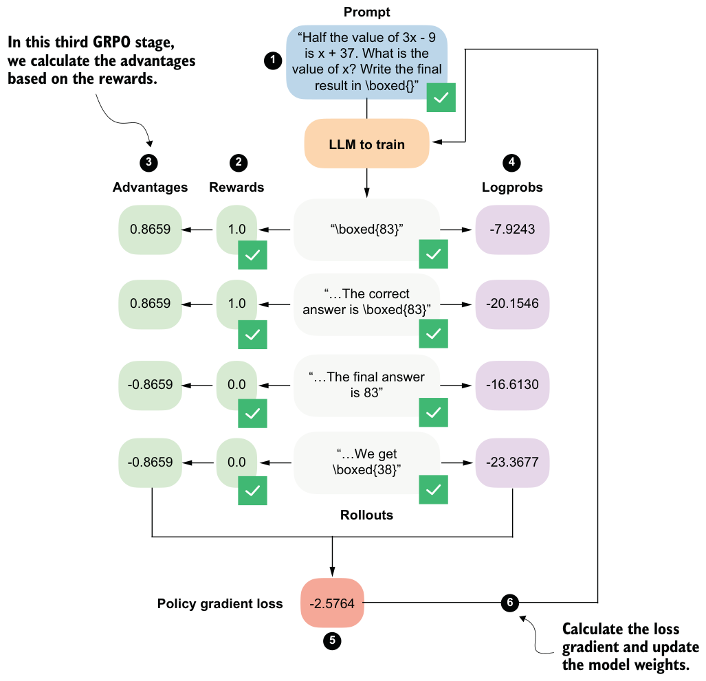
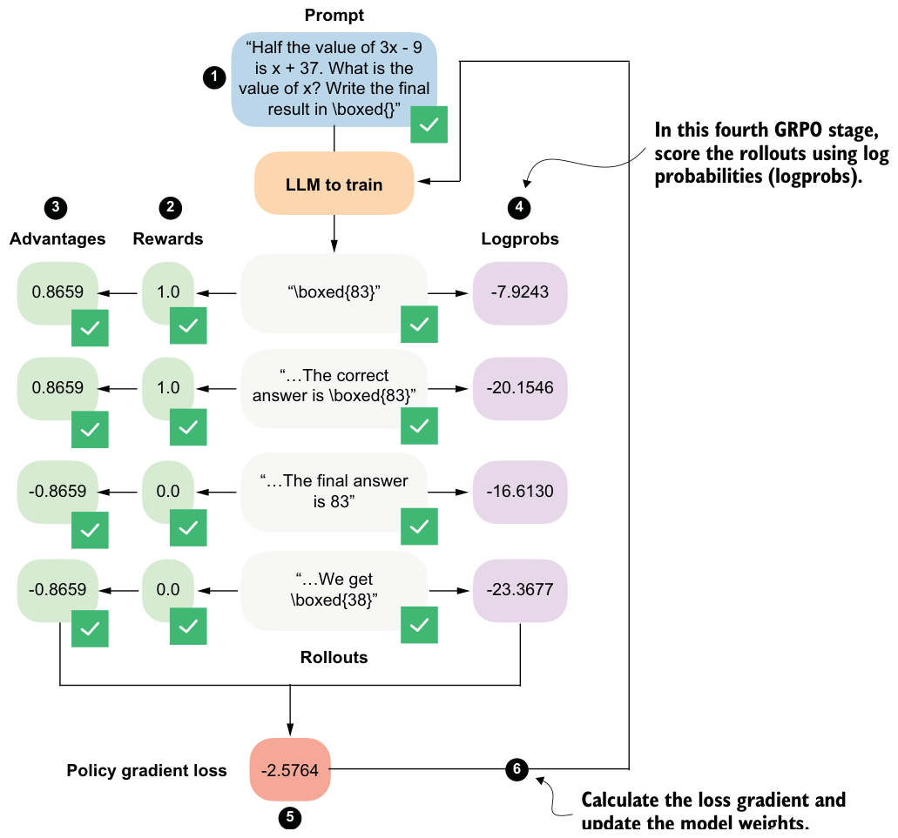

6.7Preparing learning signals from rollouts via advantages
We’ll now move on from rewards to the so-called advantages, as shown in figure 6.15. While rewards tell us how well each individual rollout performed, advantages capture how a rollout performed relative to other rollouts generated for the same prompt.
The advantage values shown in figure 6.15 are computed by a simple formula:
- 𝑟𝑖 denotes the reward of the i-th rollout.
Here
- 𝜇𝑟 is the mean reward across the group of rollouts.
- σ𝑟 is the corresponding standard deviation.
- ϵ is a small constant added for numerical stability to avoid division-by-zero errors.
In code, we can implement the advantage calculation as follows.
rewards = torch.tensor(rollout_rewards, device=device)
advantages = (rewards - rewards.mean()) / (rewards.std() + 1e-4)
print(rewards)
print(advantages)The rewards, which we computed in the previous section, are [1., 1., 0., 0.], and the corresponding advantages are [0.8659, 0.8659, -0.8659, -0.8659]. These advantage values capture which responses performed better than average and which performed worse than average within the group.

You might still wonder what the point of converting rewards into advantages is. At a practical level, the advantage values directly scale the gradients during the policy update. If the advantage is positive, the gradient increases the likelihood of the actions that produced that rollout. If it is negative, the gradient decreases their likelihood. Rollouts with advantages close to zero contribute very little.
Exercise 6.2: Zero-advantage cases
0.0 or all to 1.0). Run the advantage computation and verify that the resulting GRPO loss is zero. Why is this behavior desirable in Group Relative Policy Optimization?6.8Scoring rollouts with sequence log probabilities
We calculated the rewards and then the advantages from them. Now we’ll take a separate branch from the rollouts and compute their log probabilities (logprobs), as shown in figure 6.16. Logprobs measure how likely the model considers each generated token to be under its current parameters, as discussed in the previous chapter.

As shown in figure 6.16, these logprobs, together with the advantages, form the core ingredients of the GRPO policy gradient loss, which we will implement later on.
In the previous chapter (listing 5.8), we implemented an avg_logprob_answer function that computes per-token logprobs for the model’s answer tokens. These values are obtained by evaluating the likelihood the model assigns to each generated token under its current parameters.
When averaged across the response, these values are often referred to as token-level logprobs and are commonly used for scoring LLM outputs. Averaging is preferred in this context because it provides length normalization, which makes the scores comparable across responses of different lengths.